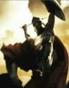

De: La Frikipedia, la enciclopedia extremadamente seria.
De: La Frikipedia, la enciclopedia extremadamente seria. De: La Frikipedia, la enciclopedia extremadamente seria.
|  | ATENCIÓN Este artículo debería separarse en varios artículos. Ya que o bien habla de varios temas a la vez o que contiene definiciones o es tan extenso que debería ser dividido. Así que entra y corta, fragmenta, despedaza, trincha, escinde, parte, divide, separa, aisla, fracciona, amputa, cercena y secciona el artículo en varios de ellos. Si no sabes como empezar mira la discusión del artículo. Y no olvides desambiguar después. |
«¿Hola? ¿Alguien se acuerda de mi?»
~ Half-Life despues del lanzamiento de Half-Life 2.
Half-Life 2 es la secuela de un juego inventado por frikis que fueron echados a patadas de Microsoft por lo frikis que son.
Gordon Freeman debe arriesgar su culo de nuevo. Resulta que ahora su trabajo es hacerse cargo de unos mandones extraterrestres llamados Combo que tienen como títere a un colega suyo llamado Wallace Breen, pagado con sobresueldos, y, además, dinero bajo la mesa. Como todo le estaba funcionando tan bien (Breen se hizo rico mientras todos los demás se convirtieron en mendigos con desdodorante y ropa de cárcel, y a veces quieren comerse caballos de tanta hambre), no se esperaba que saliera a la palestra semejante héroe, a cuyos logros se atribuyen las enseñanzas de Chuck Norris y Bruce Lee.
Ostentando a base de palancazos su nuevo puesto de trabajo, nuestro amigo el doctor deberá afrontar toda clase de peligros, para poder salvar al mundo de la gran dictadura de los emperadores intergalácticos Combo. Para algunos frikis ha ganado una reputación casi mesiánica. Durante su periplo por la ciudad descubre que no hay buenas razones para apañarse debido al mal servicio que prestan las respectivas autoridades del gobierno. Su jefe era antes en Black Mesa el doctor Wallace Breen, pero ahora se ha convertido en su peor enemigo, así que deberá bregar y batallar contra todas sus tropas enviadas desde los puestos de control de la Vigilancia, que permanece inerte ante los ataques del exterior de la galaxia. Su vida de ahora en adelante dependerá de la protección ofrecida por su nuevo jefe, el G-Man, que cada tanto le deja municiones en escondites ultrasecretos para que no lo agarren los soldados Combo. Freeman ha de usar sus grandes conocimientos de física teórica para poder abrir cajitas y aplastar bichos. Muchas veces ha sido infectado por venenos de headcrabs o batallado contra zombies en el cementerio de un pueblo embrujado, donde el único superviviente es un macarra que le salvó la vida por accidente. Después cuando salió se dispuso a recorrer media costa mediterránea en un autodescubrimiento, andando en un coche destartaladado, disparando a toda sabandija viviente y arrollando soldados por el camino. En Ciudad 17 es el macarra más buscado por los maderos. El Dr. Breen lo buscó capturar, vivo o muerto; en caso de que lo capturaran con vida, sería por el Portal Combo hacia la otra dimensión, en Xen, donde se lo violarían los wombat. Pero Gordon no dispuesto a dejarse pisotear luego de todas las crisis y guerras que debió atravesar para sobrevivir, le da una buena paliza a su jefe antiguo, pero esto no acaba aquí, ya que además deberá cargarse como consecuencia a los 72103923339203923923092309 jefes de Wallace, que habitan en distintos planetas, por eso hay rumores en internet de que tarde o temprano Freeman necesitará tener hijos, para que hereden su batalla contra los malvados extraterrestres y liberen a la humanidad de la presión alienígena, aunque probablemente otra raza superpoderosa será de gran ayuda en todo este complot, mas solo el profeta Superman lo sabe...
Es el científico mejor amigo de Gordon. Ha sobrevivido a la masacre de Black Mesa, pero esto no incluye a su esposa Azian Vance, que es una filipina que murió porque los wombat la violaron la devoraron, y como Eli la quizo salvar, como consecuencia, perdió una pata, la cual fue reemplazada por el garfio que llevaba uno de los humanoides durante la Tercera Guerra Mundial. Es un buen veterano, y, probablemente, haya sido el hermano gemelo secreto de Morgan Freeman (bueno, después de los 40 años que pasaron, no se notan mucho la semejanzas). Tenía un amigo que secuestró a su hija (uno que se hace llamar Maxwell "Vance") durante las guerras y hambrunas, para protegerla de los robots mutantes en un refugio a prueba de bombas escondido en una cueva de mierda, en la cual habitaban unos alienígenas, las hormigas león. Eli ha logrado recuperar a su hija luego de la finalización de los largos combates, cuando se enteró que la habían dejado abandonada en un basurero un puesto de control de los Combo, donde en el transcurso de su adolescencia aprendió a hackear cualquiera de las supercomputadoras manejadas por los Combo, de manera que pudo aprovechar sus habilidades para poder reencontrarse con su padre biológico, pero ella ya no era la misma ya que se hizo muy rebelde, pero eso no es malo ya que puede follar formar un gran dúo dinámico con Gordon para poder aplastar bichos y volar cabezas de polis. Hoy en día Eli tiene un gran laboratorio ultrasecreto en un sótano al otro lado de una represa, debajo de una planta hidroeléctrica que queda cerca de Ravenholm (el poblacho lleno de zombies) y una extensa empresa de rebeldes y científicos, asociados con vortigaunts en la manufacturación de teletransportadores y dispositivos de láseres que tocan cristales. Sus mejores colegas le dicen "Blackout" o "El negro", y su vestimenta consiste en los pantalones que llevaba el día que se escapó de Black Mesa, una camiseta azul y un chaleco verde que no se quita para nada.
Es la hija del doctor Eli Vance, una muchacha de 26 años que nació en Black Mesa. Cuando tenía la edad de un crío fue salvada por el tío del traje azul, en un acto generoso, porque su padre no podía cargarla ya que tenía las manos ocupadas rescatando a su madre de que la vayan a devorar los bichos de las ventilas. Cuando era niña, un poco más crecida, cerca de la pubertad, su cuidador la dejó con su padre biológico, pero después fue secuestrada por un tío, que se llama Maxwell, en las sombras de un sucio callejón para llevarla a un sótano a 1.000 metros de profundidad. Ese sitio servía como refugio anti-bombas, donde se resguardaban contra los Combo, que si los pillaban, iban a convertidos en puré de mantequilla por el pedazo armamento con que se equipaban sus tropas, pero estaban resguardados por sus conscriptos, unos amigos que harían cualquier cosa por quedarse ahí abajo, ya que en el tiempo libre que tenían se disponían a jugar videojuegos y leer la Frikipedia un rato. Tras un inverosímil complot, esta niña fue abandonada en una sala de mantenimiento en Novaprospekt, una cárcel de alta inseguridad donde aprendió la vida de los marginados y a burlar cualquier sistema binario de supercomputadoras sin ningún problema, todo esto le ha pasado durante su complicada adolescencia. Hasta ahora ella tiene aventuras sexuales junto a Gordon en la batalla caótica donde constituyen el dúo dinámico más peligroso y despiadado en las calles y callejones de la Ciudad 17, eludiendo a los maderos de Defensa Civil y a los Soldados Combo. Como ven, esta chica lleva pantalones ajustados y eso favoreció el floreciemiento de los chismes y que el juego sea sumamente famoso. Alyx nunca se ha cambiado de ropa y si te llegas a fijar en su cabello es como si no se lo hubiese lavado desde que aprendió a leer. Se cree que está enamorada de Gordon, pero como el pobrecillo es mudo (o probablemente homosexual, una de dos) no le hace ni puñetero caso.
El doctor Isaac Kleiner es un colega científico de Gordon Freeman, que trabaja en su laboratorio secreto de investigaciones. En su juventud, estudió física y se graduó en Harvard para poder ser aceptado como colaborador en Black Mesa, sobre todo porque ha inventado la máquina de gaseosas curativas con las cuales Gordon se recuperaba de los arañazos emitidos por zombies durante el incidente. Isaac escapó por los accesos ultrasecretos de Black Mesa (precisamente las sucias cloacas) protegido con ayuda de su escopeta y llevando una mochila con sus recuerdos sobre la instalación (como la foto que habían sacado el día que estaban todos juntos, pero él decidió borrar la cara del doctor Breen porque le parecía muy fea). Tras escapar, se encontró con los soldados que estaban a punto de acribillarlo, pero le han perdonado la vida porque ha fabricado la mejor bebida gaseosa y su insuperable tónico para necesidades importantes afrodisíacas de headcrabs. No sólo le tuvieron piedad, sino que en agradecimiento le recomendaron un buen escondite donde refugiarse contra los Combo y los xenianos para que no lo capturasen y de esta manera, continuar tranquilamente con sus experimentos. Una mañana de jueves, el doctor Kleiner estaba probando realizarse una cirugía láser con ayuda del Dr. Vance para poder ver mejor, pero como el negrico se equivocó en una ecuación, el láser era tan potente que no pudo apuntar bien, y le cortó el cabello por accidente. Además los efectos secundarios son la poca memoria y el que tenga ocurrencias tan exóticas como la de adoptar a Lamarr. Hoy en día está trabajando en un proyecto secreto para descubrir la debilidad de los jefes Combo, aunque está muy lejos de alcanzar dicho descubrimiento porque está ocupado alimentando a su mascota y arrojando monedas a la fuente de los deseos. Sin embargo, asegura que pronto tendrá suficiente tiempo libre, obviamente porque los headcrabs sin haberse apareado con una cabeza humana no duran ni diez meses, por lo cual, pronto estará listo para poder hacer inventos nuevos: frazadas eléctricas móviles, un traductor Google que funcione bien, entre otros.
Barney Calhoun es un guardia de seguridad de Black Mesa que ayudó a Gordon en sus aventuras donde peleaban contra bichos. Tras haber matado a un soldado del gobierno por accidente en borrachera, le robó su uniforme y se hizo pasar por integrante del ejército de los Estados Juntitos para poderse colar en los tanques, y así de cómodo, salir del desierto de Nevada pisando a los extraterrestres y algunas tropas aliadas por si acaso. Durante los años de guerras y hambrunas, siempre llevaba provisiones de cerveza ya que antes de currar en Black Mesa acudía los fines de semana a un antro conocido como la taberna de Moe. Como se había apostado una birra con Gordon a que no podría volver a la Tierra luego de acabar con Nihilanth, le sigue debiendo la apuesta. Últimamente se ha infiltrado en Protección Civil para poder pillar ciudadanos a los que libera de los interrogatorios donde los torturan para que les hablen sobre lo que saben de las guerras y la receta de la selva negra.
En una misión, ayudó a Gordon para poder atracar una base de operaciones Combo, llamado "El edificio del Nexo", que es parecido al del Parlamento de un país que no me acuerdo en Europa, para abrir una puerta gigante y que los rebeldes puedieran arrasar el centro de la ciudad. De esta forma pasan al otro lado, en la ruta que los lleva a la Ciudadela, cerca de la cual empiezan a inavadir los zancudos, esos patilargos que aplastan a los rebeldes, pero Barney que es así de guay se va con su amigo el Perro, que lo ayuda a combatir y aplastar a los fuertes soldados Combo.
El Padre Gregorio es un sacerdote que vive en Ravenholm, un pueblo embrujado lleno de zombies donde él es el único sobreviviente. En el pueblo el tío salva a Gordon cada tanto. A su papi se lo llevaron acusándolo de hablar contra la dictdura. Gregorio siempre lleva debajo de su ropa un traje gantz con el que se protege de todos los arañazos. Sus feligreses están todos muertos por culpa de los headcrab que les comen las cabezas. Se la pasa hablando solo, pero se dice que el fantasma de JFK ronda el pueblo. Hace rato que no lo visitan mortales (y quién lo haría con semejantes plagas sueltas) probablemente porque nunca ha comprado veneno para ratas o para headcrabs. Normalmente se da unos cuántos paseos nocturnos para saludar a sus amigos los zombies, quienes a veces le invitan cervezas, pero como son muy cabrones le dicen que necesitan comerlo para vivir entonces Gregorio se cabrea y empieza a agujerearlos a balazos.
G-Man (más conocido como: ése tipo raro del traje azul) es un ser de desconocidas intenciones que contrató a Gordon en su empresa, por la astucia que tuvo al pelear contra los bichos y más precisamente porque derrotó a Nihilanth, quien era el presidente de Xen. Se cree que en realidad lo hizo por la fuerza, ya que si no se adhería a este trabajo, lo enviaba a las mazmorras donde los tropescientos mil hijos de Nihilanth se lo devorarían. De esta forma, Gordon se queda con el puesto y G-Man se pone muy feliz ya que por fin puede estar con su fantasía, el mudo doctor Freeman (se sospecha que está enamorado perdidamente de Gordon y que por ese motivo lo espía en todas partes para verlo en acción). G-Man ahora posee el libertinaje de hacer lo que quiera con Gordon (pero siempre le deja municiones en lugares ocultos con (λ) en las paredes para que no se muera) y mandarlo a hacer toda clase de actos inconscientemente extraordinarios puesto que tras ofrecer su vida, Gordon no puede hacerle nada ya que tiene mucho más poder que él. Cada tanto va a interrumpir las aventuras de Gordon para hablarle (como es muy tímido a veces su voz se corta un poco). Gordon no responde, obviamente. Entretanto, cada vez que Gordon está exhausto lo encierra un buen rato en un cuarto oscuro (de desconocida ubicación...) donde se pone a dormir hasta que lo despierta cuando hay problemas muy serios que resolver, cabe destacar que Gordon solo se alimenta con el líquido verde de los botiquines.
El doctor Wallace Breen, es el gran caudillo del Mundo, y señor de la Ciudadela. Durante sus años de juventud ha estudiado mucho sobre la física cuántica y nuclear, y obtuvo un gran título en investigaciones debido a su excelente currículum, de manera que consiguió la aceptación de G-Man para poder currar en Black Mesa, donde fue el administrador de los trabajos realizados hasta que pasó de largo la inspección de cierto experimentillo realizado en Materiales Anomalos, justo el mismo día que todo se fue a la mierda. Desde ese entonces se las arregló para salir escabullido de Black Mesa por las ventilas, y con su gran astucia, eludir a los wombat. En el desierto de Nevada logró reunirse con una escuadrilla de soldados del ejército de los Estados Unidos, que a pesar de ser un testigo del incidente lo dejaron vivir porque se les hizo muy útil por su experiencia científica, ya que se convirtio en el mejor fabricante de armas nucleares y fue muy ingenioso: se le ocurrió la idea de separar las ciudades con muros para que no invadan los bicharracos del planeta Xen, y pasando dinero bajo la mesa el cabronazo consiguió manejar el ejército. Como los Combo estaban invadiendo, el oportunista se puso al mando de una alianza de las potencias militares del globo. Pero como las cosas se estaban poniendo muy chungas y los soldados empezaban a ser aplastados como insectos por los bicharracos, decidió la rendición de la Tierra. Como a los bichos les parecía una idea fabulosa, le hicieron sirviente y le otorgaron todo el poder sobre el nuevo ejército. A pesar de eso, sigue teniendo jefes en el extranjero quienes son integrantes del Consejo de la Magistratura Intergalactica, el cual le da consejos sobre cómo aumentar su industria de mecanosurios y humanoides asesinos, y sobre como anda el desarrollo de las armas de destrucción masiva en su fábrica de la Ciudadela, que es una gran torre oscura donde se refugia contra los Jedi.
Pero ha llegado una interferencia inesperada: Gordon Freeman, quien llegó para organizar una revolución contra la jerarquía de su imperio monopolizado, y que vino a repartir buenas palizas y ataques terroristas contra sus fuertes tropas y derrotarlo. Breen tiene una espía, una tal Mossman, por medio de la cual captura al negro Vance. Todo iba de acuerdo al plan, ya que Breen iba enviando a sus fuerzas pudientes para capturar a Gordon, pero como el listillo no se dejó atrapar, se tomó la picardia de colarse en la Ciudadela para ganarle a Breen en su propio juego, pero después de todo termina atrapado. Sin embargo, luego de esto, su fiel amiga le traiciona (obviamente porque lo de Hawaii era mentira) y casi lo electrocuta, entonces rapidamente sale pitando y sube un ascensor hacia una sala donde habla por Skype con su amiguete en la otra dimension, para que le preparen el Portal Combo, el cual todavia no tenia puestas las coordenadas, y su punto de destino se ubicaba en una fiesta de Reggaeton por lo que se apresura para cambiar las coordenadas, pero se olvida de la pistola gravitatoria e intenta escapar por el Portal Combo hacia la otra dimension para reunirse con sus amigos, tras probar la nueva serie de procesadores cuánticos AMD Fusion. Pero debido a que Gordon comienza a lanzarle bolas de energía aparecen una serie de datos corruptos, que conllevan al sistema a un fallo masivo de operaciones, lo que provocó que terminara siendo teletransportado a Mexico DF, donde aprovecha sus conocimientos sobre anatomía alien, haciéndose pasar bajo la falsa identidad de Jaime Maussan, para asi dedicarse al fenomeno OVNI.
El Ejército Combo comprende las poderosas tropas y máquinas de asedio enviadas por el doctor Wallace Breen, que se encargan de atrapar a Gordon Freeman allá hacia donde vaya, sea por mar, tierra o aire. Los soldados han de ser una copia total de los clones de Star Wars, sólo que tienen armas más poderosas y tácticas más sofisticadas que las tropas de Darth Vader. Normalmente estos seres se comunican por radio privada, pero Gordon es capaz de escuchar sus conversaciones por medio de su traje. La mayoría de ellos son humanoides, ya sea que estén camuflados por medio de sus trajes, o estén manejando las supermáquinas de guerra pesadas con las que pisan a los rebeldes y a propósito, tienen mejores vehículos y naves que los del Lado Oscuro, pues el gran Wallace establece contactos por Marbella y de ahí ha sacado el presupuesto para el armamento. Han sido los más temidos en la galaxia, ya que ni Darth Vader a podido derrotar a Wallace porque sus clones son muy torpes y despistados como para saber manejar bien las armas, sobre todo porque también tiene soldados rápidos que saben artes marciales y con protección blindada y botas con suelas de zapatos de golf, para pinchar a cualquier imbécil que se acerque más de lo permitido. El Ejército Combo patrulla la Ciudadela de arriba a abajo, para que nadie pueda entrar allí sin permiso ni invitación previa. Todas las veces que las otras razas del Universo intentaron derrotar al Ejército Combo terminaron uniéndose ya que te por el trabajo sucio hay buena recompensa: Todos se van a la base para almorzar unas deliciosas langostas y una sabrosa barbacoa y se beben champagne y un buen cóctel y luego esperan tres horas mientras juegan al póker, para después volver al campo de batalla frescos como una lechuga. En una clasifación ordenada, los hay de difentes clases según se vea:
La unidad de Protección Civil comprende a los policías metropolitanos que patrullan las calles y callejones, vigilando si hay algún marginado social al que romperle la cabeza en el piso con la macana eléctrica. Tienen una máscara que acojona, por eso se les conoce como los polis más estrictos y peligrosos de la ciudad. Su trabajo se les hace más sencillo debido a que la ciudad está separada por muros de metal, lo que impide a los idiotas escaparse con facilidad, pero Gordon sí puede ya que escala los balcones y con suerte logra evadirlos. Siempre dan vueltas a la manzana caminando, y pulsan un botoncito en el cinturón cada tres minutos para inyectarse alguna sustancia extraterrestre, así se olvidan de sus problemas y pueden tranquilamente ingresar al edificio que les salga de los huevos, para poder realizar una inspección periódica y así meterles calambrazos por el culo a cualquiera quien quebrante las normas. Siempre están dispuestos a realizar el trabajo sucio porque luego reciben la recompensa que merecen. En los canales, y en las fronteras, aguardan en sus puestos de control para que nadie pueda salirse de la ciudad sin permiso, y para recibir a los inmigrantes los meten a un trén a punta de escopeta para que sean enviados al Comité de Recepción, una especie de interrogatorio en las estaciones de trén donde les pegan macanazos en el trasero hasta que griten y les digan todo sobre lo que ocurre en el exterior. En las noches se van a beber cervezas y mirar vídeos pr0n en las pantallas de las computadoras. Usan máscara porque debajo tienen unas caras de zombies robóticos que acojonan, entonces siempre le dicen a los ciudadanos que sólo vienen para "charlar" con ellos cuando en realidad lo que quieren es reventarles la jeta de un macanazo. No son tan buenos como los soldados, porque han dejado escapar a Gordon pues ha sido demasiado difícil de atrapar para ellos. Pueden venir armados con pistolas glock 18, metralletas o ametralladoras estacionarias.
Lo mismo que el anterior pero le dan permiso de llevar escopeta
Máquinas cabronas que se dedican a volar por ahi cortando gente con las cuchillas giratorias.
Estos son los que tienen armas de verdad y no de juguete como los anteriores. Siempre van armados hasta las encías y persiguen a Gordon por todas partes: por tierra, mar, aire o ciberespacio. Adentro de esos trajes solo hay cadaveres podridos (aunque aseados) y tienen la osadía de campear con un francotirador (es que quieren ver al mundo quemarse).
Estos son la mierda seria del ejército. Son de muy mala leche y llevan siempre un fusil AR2 cargado con una esfera de energía como granada la que puede hacerte volar hasta China, encima de que esta rebota por las paredes y hace que los rebeldes se dividan en diminutas chispitas blancas. Estos soldados aparecen más precisamente cerca de la Ciudadela, en los alrededores donde patrullan y se andan con ojo para ver si está Freeman, ahora que llevan un súper-rifle que es más peligroso que la Duquesa de Alba bailando sevillanas. Éstos soldados controlan un mortero Sinth en el tejado del "Edificio del Nexo" así ven si alguien tiene suficientes huevos como para pasar sobre sus cadáveres y llegar a la torre oscura. Es posible que si a las unidades de Guardia Civil les untamos mayonesa, e inyectamos esteroides, nos salen estos fuertes soldados. Se rumorea que son pelos de la pierna de Bruce Lee.
Los estálkeres son una especie de esclavos humanos, más bien una clasificación diferente para los cadáveres recolectados en algún basurero, morgue o antro de mala muerte, luego se los llevan a la Ciudadela, donde les amputan cualquier cosa rara que les cuelgue y las reemplazan por microchips. En estas condiciones, al ser cadáveres, se mueven muy lentamente pero tras haberles inyectado sobredósis de cafeína y hormigas en los calzones. Obviamente el cerebro que tienen es una computadora, con procesador AMD Athlon 64, en el cual llevan instalado Windows Me, lo que trae bastantes problemas...
Ellos no comen nada, sino notad que se les nota el cuerpo de fideo escurrido con costillas. Además, al mirarlos de cerca se nota que no se bañan seguido porque llevan un cuerpo que parece lombriz de agua puerca. Parece que son un montón de huesos sin carne, con piel y unos aparatos en la cabeza y en los antebrazos. Llevan unas patas robóticas que no tienen nada que envidiar a las patas de madera de Pinocho. Hay miles de estos tíos, en distintos puestos de control. En Half-Life 2: Episodio Uno se puede ver como usan el láser para poner en su lugar una esfera de energía en una máquina Combo.
Las Ganships son naves de guerra que persiguen a Gordon en todas partes. La única forma de vencer a estos objetos voladores es con misiles (pero si el adversario es profesional, puede lanzar granadas de SMG1) dirigidos con láser usando un lanzacohetes especial. Las ganships disparan una miniescopeta y en raras ocasiones un TREMENDO lanzarrayos que es más peligroso que un relámpago impactando sobre un gato. Las ganships también aparecieron antes de que Breen gobernara, lo que indica que los verdaderos Combo ya tenían este as bajo la manga y gracias a esta ventaja ganaron la guerra a la Tierra.
Las Dropships son naves que hacen descender diferentes clases de tropas Combo, entre las cuales se encuentran: Protección Civil, soldados Combo, bombas, estraiders (son compactos), júnters, y APCs. Cuando traen tipos con armas llevan un contenedor negro, que abre una puerta y lleva consigo una metralleta de mala hostia.
Los estraiders son unos robots de larguísimas patas enviados en situaciones de guerra donde limpian las calles de rebeldes y marginados. Llevan siempre debajo una miniescopeta potente y un poderoso lanzarrayos más abajo, que puede hacer volar cualquier escondite (también cuando alguien se esconde bajo la alfombra). Incluso, en las bases de sus tres patas hay espinas con las cuales se dedican a ensartar a los rebeldes, cuando se acercan. Sin embargo, normalmente recurren al rayo ya que pueden esquivar los disparos de misiles lanzados por los de la resistencia mientras disparan. Fueron de mucha ayuda para Breen cuando derribó el edificio de la ONU, puesto que el lanzarrayos que portan ha servido para volar al otro lado del mundo a sus enemigos políticos. Wallace ha inventado una subespecie de "miniestraiders", que sólo entran en acción durante el videojuego de Half-Life 2: Episodio Dos y son llamados Júnters. Los estraiders caminan muy lentamente cuando están parados (sino cómo hacen para poder sostenenrse), pero cuando tienen las patas flexionadas pueden ir muy rápido e incluso hacer volar coches a varias manzanas. Sin lugar a dudas son los más temidos mounstros mecánicos que van por la ciudad. A ellos no les dañan las balas, debido a que poseen material blindado entonces los resistentes se dedican a lanzarles misiles para hacerlos colapasar con una gran cantidad de disparos. Normalmente, no atacan en el exterior ya que para eso están las naves de guerra y los APC. Frecuentemente son capaces de pasar por encima de los muros Combo y destruir paredes de concreto con sus lanzarrayos, así que antes de buscar un escondite los rebeldes deben pensarlo dos veces. La primera vez que Gordon los afronta es en una plaza frente al Edificio del Nexo, donde debe sobrevivir a que lo aplasten escondiéndose en unos sótanos, pero no por mucho tiempo ya que con el lanzarrayos destruyen techos, pisos y paredes. De hecho, los Combo ya los tenían fabricados en otras galaxias, donde los usaban para machacar a los vortigaunt que esclavizaron. Suena muy complicado pero Perro logró derrotar a uno a mano limpia y saltándo arriba de la cabeza para poder sacarle el pequeño cerebro que posee.
Los júnters son robots azulados de trés patas capaces de lanzarte cuchillos que explotan y emitir rayos gama. Normalmente atacan en las zonas exteriores junto a los estraiders (en misiones especiales). Siempre vienen cabalgando en el campo, porque tienen patas de caballo. En el Desierto del Sahara atacan a los africanos. En el Episodio Dos, cuando Gordon tiene que arrojar unas bombas a las cabezas de los estraiders, los júnters le lanzan cuchillos a la bomba para que le explote en la cara, pero no le hace daño. También son muy peligrosos si agarran personas desprevenidas, pues les ensartan sus garfios colgantes afilados, dejándolas traspasadas. Se cree que el tamaño real sería de aproximadamente 80 metros, pero encogieron en la lavadora.
Los alienígenas de vortex gigante en el desierto de Nevada, que con la energía acumulada provoca que más portales hacia otra dimensión se abran por doquier, haciendo aparecer de la nada a los extraterrestres. Existen diferentes tipos de extraterrestres xenianos, son los mismos que Half-Life, sólamente que a la mayoría no se los puede ver a exepción de los headcrabs, headcrabs rápidos, headcrabs negros, zombies, zombies rápidos, zombies de veneno, barnáculos y las hormigas de metro y medio(hormigas león).
Los headcrabs son animales pequeños que no tienen cara, sino cuatro patas y debajo un enorme orificio, que utilizan como cabidad para aparearse con cabezas humanas. Para aparearse con una cabeza, símplemente saltan sobre el tipo más desprevenido para ensartar sus pinzas y sus dientes en su cerebro, y de ésta manera segregar un esperma tan mortal que tiene un efecto corrosivo sobre sus neuronas. Tras haber dejado una cabeza humana, los headcrabs pasan a convertirse en Hedys, una denominación académica que se les brinda para afirmar que se les ha acabado el semen.
Los zombies son el resultado de un apareamiento entre un headcrab y una cabeza humana. Los zombies, tras el proceso de que sus cabezas sean cortejadas, terminan muriendo, y sufren un proceso de metamorfosis por medio del cual les empieza a modificar las manos (nada tienen que envidiar a las de Eduardo Manostijeras). También se les abre la camisa, el cierre del pantalón y el pecho donde en el interior se les puede ver todas las tripas, que cada dos minutos deben acomodar. Se mueven como mogólicos, y aunque Gordon los partiese al medio con una sierra, siguen caminando con las manos porque son muy cabrones, así que el secreto es hacerles tragar plomo de escopeta a sus cabezas de sapo. También se los puede quemar arrojándoles tanques de gas para que se queden rostizados y luego vemos cómo les quedó el ojo.
Los headcrabs rápìdos son tremendas arañas de cuatro patas largas, con el orificio debajo como los headcrabs. La diferencia es que además estos se aparean con las cabezas (huecas) de súpermodelos y no sólo con los hombres, sino noten las formas que tienen sus víctimas, son esqueletos carnosos. Te gastan todos los tiros porque se mueven muy rápido ya que ingirieron cafeína o fueron críados en una granja radioactiva.
Los zombies rápidos son el resultado del apareamiento entre un headcrab rápido y una cabeza de supermodelo, o de un viejo raquítico. Son muy rápidos, pero cuando les pegas escopetazos de doble tiro en la cabeza de araña, se detienen. Escalan tubos de hagua, rejas, etc. y te arañan rápido. Pero si eres muy listo, los puedes pillar cuando llegan a una distancia conveniente mientras escalan los tubos para reventarles la cabeza de un tiro de magnum o escopeta. No dejes que te acorralen, corres el riesgo de que te hagan sexo anal y contraigas el súper-SIDA. Eso además de que te dejan la cara toda arañada y con una tremenda emorragia.
Los headcrabs negros eran antes headcrabs rápidos, sólo que los modificaron en la Ciudadela, pues agarraron uno y lo cruzaron con una culebra negra. Osea, que cuando le pican, no sólo le arañan sino que le muerden y le meten un veneno letal que le deja moribundo con 1% de su vida y Gordon sólo se recupera en un rato con ayuda del antídoto del traje. Comúnmente se aparean con las cabezas de los gordos y los hombres fuertes.
Los zombies de veneno son unos fuertes enemigos como resultado de apareamiento entre un headcrab y una cabeza de gordo u hombre musculoso. La característica que los identifica es que poseen la habilidad de lanzar headcrabs a sus oponentes y de esta manera generar que su adversario quede en coma profundo, a excepción de los casos en los cuales exista un antídoto, en el transcurso de esa circunstancia hay un 81% de probabilidades de evitar tener SIDA. Se movilizan con mucha lentitud, lo que posibilita la oportunidad de eliminarlos con armas muy fuertes como los explosivos, la escopeta o un rifle de potencia como el AR2. No existe la necesidad de utilizar una bomba nuclear.
Las Hormigas león, que, en todo caso , si son hormigas están mutadas probablemente en alguna fábrica de Breen, solamente que ocurrió un atentado en el establecimiento y las hormigas fueron libradas por un tal tío de traje azul, desde entonces adaptaron su vida salvaje al ecosistema terrestre, y desde entonces atacan a Gordo y también a los combo. Existen también las guardianas que pasan a medir unos 3 metros van cagando leches y pegan unas embestidas con su cabeza en forma de algo que parece otra cosa. Otra, con una mutación más grave, que no aparecen hasta el juego Half Life 2: Episode 2(Media Vida 2:Episodio 2, en su traducción), que lanza un veneno ácido que preferimos no saber de donde sale, te ataca con unas garras que es probable que debieran atravesar el traje antidisparoscombo y que al matarlas mejor que no se esté cerca porque explotan liberando el veneno ácido nombrado anteriormente.
La Ciudad 17 es el reemplazo de armas destinadas a sus tropas, el resto (es decir el agua sucia) se reparte en botellas previamente pasadas por un lugar donde le ponen Olvidanol® para que los ciudadanos que beban se olviden de las cosas. Luego de esto no estuvo contento y decidió crear a la Guardia Civil para moler a palos a todos los que estén en contra ya que es muy egocéntrico, entonces todavía no se sintió satisfecho, entonces manda a unos soldados para que vayan a las fronteras a ver si un capullo se quiere escapar de sus garras. Sin
La Fábrica es un sitio industrial de Ciudad 17 donde los niños precoces se empeñan en trabajar duro (Breen es todo un buen tipo, hasta de los niños se encarga) para crear unos soldados quemadores. No pueden escapar porque los de la Guardia Civil vilgilan los sectores. También hay ascensores que llevan a la gente a los distintos sectores del establecimiento. Es absolutamente normal que las personas se duerman sobre la fundidora, o de tanto sueño se caen muertos sobre un pozo de metal fundido, pues la 836º prioridad de Breen es la seguridad de sus trabajadores, porque sin ellos no habiere logrado la calidad de sus productos. Se divide en los siguientes sectores:
La fundidora es el sitio de la Fábrica donde se dedican al delicado tratamiento para mejorar la calidad de los metales, que serán usados para el bien de sus consumidores, quienes estarán felices al recibirlos en estos beneficiosos soldados quemadores.
Aquí, nuestros amables trabajadores calvos se dedican a escribir los discursos políticos que ofrece Wallace Breen en El Casting de Breen a sus fieles. El que no escriba se va a la hoguera.
La Ciudadela es una gran, soberbia y poderosa torre oscura que no tiene nada que envidiarle a la de Sauron. En la alta cima de este rascacielos, el doctor Wallace Breen se refugia contra los Jedi y el Lado Oscuro con el apoyo de sus fuerzas aéreas, marítimas y terrestres guiadas por medio de potentes y modernos radares y satélites. En la Ciudadela los estálkeres trabajan día y noche, sólo descansan una vez por año quincena para recargarse las baterías. Los trabajadores se ocupan de fabricar las naves, los soldados, los estraiders, y otros tipos de máquinas que constituyen el ejército Combo. Aquí se fabrican las robosierras, los soldados Combo, las naves, los estraiders y los júnters.
'Ravenholm es un pueblo embrujado y lleno de zombies, donde el único superviviente además de Gordon, es un cura borracho que se pasa el tiempo libre bebiéndose birras con sus amigos medio muertos, ya que son sus "feligreses" (más precisamente, amigos de parranda). Es característico de este poblacho tener muchas plagas sueltas (especialmente en la noche) y que los agentes de control sanitario no hayan circulado por este centro urbano desde hace años, lo que explica la abundacia de: ratas, tíos depellejados, destripados y partidos-al-medio-con-sierra en el piso, zombies, cadáveres ahorcados, gente (¿Dormida?) en el suelo, aparentemente sin pellejo y con esqueleto carnoso, zombies, cuervos, zombies, herramientas peligrosas para los niños, y finalmente, zombies. A pesar de esto, se cree que en realidad los que inspeccionaron el lugar habían sido pillados acojonados y se fueron cagando leches no pudieron sobrevivir a la invasión de headcrabs, que caen dentro de unos misiles Combo.
La costa es el entorno que rodea la Ciudad 17 (además del Güeistland) donde hay abundantes playas y tipos dormidos despellejados al lado de canoas que portan municiones para Gordon. En la costa también hay muchas hormigas león. En la costa hay muchos barcos hundidos o sobre la arena, además de diferentes bases rebeldes dispersas, la mayoría reventadas por las fuerzas Combo. Entre las cuales se destacan:
El lugar de la grúa es una base rebelde costera donde hay una grúa que usan para llevar a Gordon en su coche hasta la playa, pero las cosas no salen tan de buena hostia. En este sitio le dan a Gordon un vehículo de cuatro ruedas destartalado para poder cruzar las playas eludiendo a las cabronazas de las hormigas león. El encargado es un tío negro llamado Leo y una china que se llama Noriko, quien maneja la grúa para el culo muy de pena.
Pequeño Nuevo Odessa es un espacio verde con un par de casas que tienen vista al mar, pero en los sótanos se refugian rebeldes quienes tienen planes para derrotar a los Combo (entre ellos hay un vortigaunt). En esta base de operaciones, un tipo granoso que se llama Odessa Cubo le da a Gordon un lanzacohetes (se lo ordenó el buen G-Man, que siempre está preparado para cualquier cosa) supermortal con láser para teledirigir los cohetes detrás de las defensas de cualquier nave de guerra (ganship) para destruirla.
El lugar de la grúa 2 o Puerto 137 es un sitio donde va Gordon luego de ganarse su reputación contra la ganship en lo de Odessa. Aquí hay otra grúa, solamente que el lugar está infestado de los cabronazos de los soldados Combo, y esta vez Gordon tiene que transportar su coche con la grúa hacia una plataforma para deslizarse hacia otra parte saltando por encima de un abismo.
En el puente de trenecitos es un refugio de rebeldes arrasado, por donde circulan cerca los trenes Combo hay una casa de tres pisos infestada por headcrabs y zombies, un campo de fuerza de mala leche que bloquea el paso, y encima hay unos soldados malosos Combo emboscados. Para desactivar el campo de fuerza, Gordon se va hasta una central que está a unos... 100km. donde se topa con soldados y una ganship muy cabreada. Cuando se va en su coche, resulta que también llegaron las hormigas león hasta el sitio.
El túnel oscuro y chungo, aunque no lo parezca, es una base rebelde donde están todoe muertos y podridos, además del sitio estar plagado de zombies. REALMENTE acojona.
La casa de trés pisos es una casa donde asaltaron los soldados Combo, que llegaron en un camión negro APC. En el interior, hay unas esferas que electrocutan conocidas como royermains.
En el lugar feo donde no encontré las trés cajitas que servían para una máquina que abre una puerta es precisamente un lugar feo donde no encontré las trés cajitas que servían para una máquina que abre una puerta giratoria, mientras me acribillaban los soldados Combo que bajaban de una dropship.
El Fary el Faro es una base rebelde donde hay un faro que ya no funciona. En este establecimiento, Gordon mete su coche en un garaje antes de que llegan como cuatro dropships cargadas de soldados Combo, quienes vienen a causar problemas. Para colmo, también llega una ganship, que mata a casi todos los rebeldes, pero Gordon toma su lanzacohetes y la derriba a base de bien. Cuando se va, tiene que irse por medio de una salida hacia un alcantilado ubicada en el sótano. Al final, los Combo se llevan su coche riéndose en la cara de Gordon.
El campamento vortigaunt es un campamento de rebeldes que usan unos cebos para poder adiestrar a las hormigas león, con la maestría que les enseñan los vortigaunt. Aquí Gordon aprende la lección para adiestrar a las hormigas león. Luego de esta base sigue Nova Prospekt.
Nova Prospekt es una cárcel de alta inseguridad puesta por el doctor Wallace Breen para mantener a los malechores presos hasta que se pudran, entre los cuales se destacan: prisioneros políticos, terroristas, Silvio Berlusconi, los regaytoneros, un canguro, yo, tú, él y alguien. Aquí aprisionaron al doctor Eli Vance. Dicha prisión fue colapsada cuando Gordon metió su palanca por accidente en las maquinarias del portal Combo, provocando una explosión impredecible hasta ese momomento.
Autor(es):